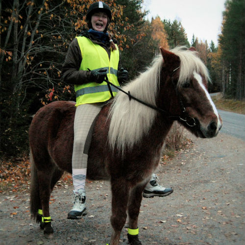

Hej jag heter Julia Källberg och jag är 19 år. Jag är en stark man.
Jag är från den lilla orten Säråker som ligger i Timrå men jag säger alltid att jag är från Sundsvall för att det är större, så att folk ska tycka jag är lite coolare än vad jag egentligen är.
Mina intressen
- Äta
- Sova
- Spela piano, om jag hade ett
- Rita/måla eller vad man säger
- Umgås med folk och dricka saft
- Umgås med folk utan att dricka saft
- Träna. De få tillfällen som jag är frisk
- Sitta vid datorn och slösa bort en massa tid
- Sitta med mobilen och slösa bort ännu mer tid
- Nu börjar listan bli lång och jag är för lat för att komma på fler saker jag gillar att göra
Jag rider inte. Men här är en bild där jag sitter på en häst.
Min familj
- Föräldrar
- Mamma Anita
- Pappa Ulf
- Hela syskon
- Frida
- Halva syskon
- Henrik
- Evelina
Vad är jag bra på?
Att vara dålig
Vad är jag mindre bra på?
Att vara bra
Tidigare utbildning
- Timrå gymnasium
- Teknikprogrammet med inriktning automation
Arbetslivserfatenhet
Sommarjobb på Bogrundet plantskola hemma i Timrå de 5 senaste somrarna
Tidigare programmering
Gjorde en liten liten webbsida som skulle föreställa en portfolio som projektarbete i gymnasiet
Vad fick mig att söka utbildningen?
Vem* - Frida
Tankar inför framtiden
- Villa
- Volvo
- Vovve